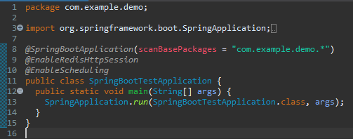
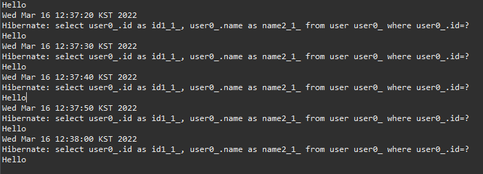
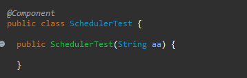
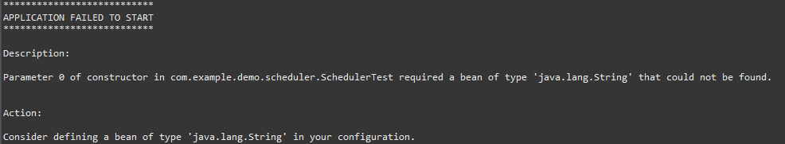
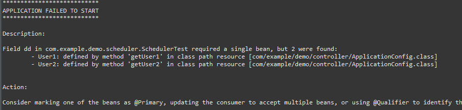
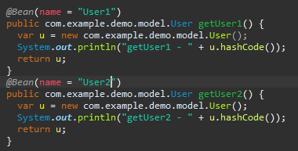
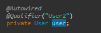

[Java] 63. Spring bootでcronスケジューラとComponentアノテーション
こんにちは。明月です。
この投稿はJavaのSpring bootでcronスケジューラとComponentアノテーションに関する説明です。
私が以前にWeb Frameworkでcronスケジューラを使ったことがあります。
リンク - [Java] JSPのSpring環境でschedulerのcronを使う方法
我々がウェブサーバーを運用したらブラウザ(Browser)から要請により実行処理することではなく、決めている時間にプログラム内部のキャッシュ管理とかデータベースのデータ管理など様々な処理をしなければならない時があります。
もちろん、WindowサーバーならウィンドウスケジューラがあるしLinuxサーバならcrontabスケジューラがあります。ウェブサーバーと独立でスケジューラを運用して使ってもよろしいですが、システム内部で運用しなければならない時があります。
cronスケジューラをプログラム中で実装したら一つの問題点があります。
例えば、決まってる時間にメールを転送するロジックがあり、それをプログラムのcronスケジューラにより実装しました。そして偶然にこのウェブサーバーがロードバランシングで分散処理になっています。
そうするとスケジューラにより様々で重複実行になります。そのため、cronスケジューラを作成する時にはいつもこの部分を考えて実装しなければならないです。(私がこのバカ―な経験を持っていることではないです。)
Spring bootでcronスケジューラを使うのは凄く簡単です。別にpom.xmlライブラリを追加する必要もありません。
この部分は以前のWeb frameworkより凄く楽ですね。
Spring bootを実行するmain関数があるクラスに@EnableSchedulingアノテーションを追加することでできます。
package com.example.demo;
import org.springframework.boot.SpringApplication;
import org.springframework.boot.autoconfigure.SpringBootApplication;
import org.springframework.scheduling.annotation.EnableScheduling;
import org.springframework.session.data.redis.config.annotation.web.http.EnableRedisHttpSession;
// パッケージベース設定
@SpringBootApplication(scanBasePackages = "com.example.demo.*")
// Redisにセッションを共有する。
@EnableRedisHttpSession
// cronスケジューラを使うように設定
@EnableScheduling
public class SpringBootTestApplication {
// main実行関数
public static void main(String[] args) {
SpringApplication.run(SpringBootTestApplication.class, args);
}
}

上みたいにアノテーションだけ追加するとcronスケジューラを使いましょう。
そうするとこれからcronスケジューラを使うためにbeanを追加しましょう。
package com.example.demo.scheduler;
import java.util.Date;
import org.springframework.beans.factory.annotation.Autowired;
import org.springframework.beans.factory.annotation.Qualifier;
import org.springframework.scheduling.annotation.Scheduled;
import org.springframework.stereotype.Component;
import com.example.demo.dao.UserDao;
// @Componentアノテーション
@Component
public class SchedulerTest {
// DI依存性注入
@Autowired
// FactoryDaoから取得
@Qualifier("UserDao")
private UserDao userdao;
// cronスケジューラを設定
@Scheduled(cron = "0/10 * * * * *")
public void test() {
// コンソール出力
System.out.println(new Date());
// コンソール出力
System.out.println(userdao.selectById("nowonbun").getName());
}
}
ここで@Componentアノテーションを追加してSpring Beanに登録しましょう。
そしてスケジューリングする関数に@Scheduledアノテーションを追加して文法を利用してスケジュールを設定しましょう。
ここでは私が10秒単位で実行することに設定しました。

ここでScheduledアノテーションに設定するcron文法があります。
この部分は以前に説明したことがありますが、また整理してみましょう。
リンク - [Java] JSPのSpring環境でschedulerのcronを使う方法
まず文法はスペースで区切りで総７個単位があるし、最後の一つは省略ができます。
* * * * * * *
秒 分 時 日 月 曜日 年(省略可能 - 省略時には毎年の意味)
まず、上の例はあすとアスタリスクマーク(*)をしましたが、この意味は毎秒、毎分を意味します。つまり、上は毎秒で実行するという意味です。
アスタリスクマークではなく、普通は数字を使いますが、単位ではなく指定時間になります。
つまり、「1 1 1 1 1 *」の意味は1月1日1時1分1秒に実行する意味です。6番目は曜日ですが、 「1 1 1 1 1 1」の意味は1月1日1時1分1秒の日曜にに実行するという意味ですが、1月1日が日曜日ではなければ実行しません。
参考に曜日は1が日曜日から2は月曜日、3は火曜日。。。順で7は土曜日の意味を持っています。
ここで我々は複数の時間を設定することができますが、コンマ(,)の区切りで設定します。「1,11 * * * * *」は毎分1秒と11秒に実行するという意味です。
また、指定時間ではなく、単位時間で設定したい時もありますね。つまり、10秒単位、5分単位で処理したいです。その場合は0/単位時間を入れたらできますが、「0/10 * * * * *」は10秒単位になります。
その以外の特殊表現式もあります。
| 表現式 | 説明 |
|---|---|
| * | ALLの意味で毎秒、毎分、毎時、毎日、毎月、毎年 |
| ? | 日、曜日だけで使えることで条件なしという意味 |
| / | サイクルの繰り返しの意味 |
| - | 範囲の意味 |
| L | 日、曜日だけで使えることで最後の日の意味 |
| W | 日だけで使えることで指定された近い平日 |
| # | 曜日だけで使えることで週#曜日という意味 |
特殊表現式で「L,W,#」がありますが、「L」は最後の日の意味を持っています。日と曜日だけで使えます。日で「L」を使うと月の最後の日、曜日の場合は土曜日になります。
Wは日だけで使えますが、近い平日という意味です。10Wの場合は10日が土曜日なら9日、日曜日なら11日に実行する表現式です。
#は曜日に使える表現式です。2#2なら二つ目の週の月曜日に実行する意味です。
cronライブラリを使う時、私はComponentアノテーションを設定してSpring Beanを登録しました。
参考でSpringにはBeanというアノテーションもあります。
まず、Componentというのはクラスに付けるアノテーションですが、SpringでDI依存性注入するため、使うクラスという意味です。(scan-auto-detection、dependency injection)
つまり、Singletonパターンで使うデータ形式のデータではなく、Controllerタイプに使うクラスを設定することです。
条件としてはパラメータがないコンストラクタが存在しなければならないし、そのコンストラクタのアクセス修飾子は別に何でも関係ないです。つまり、コンストラクタを作成してないか、作成してもパラメータがないコンストラクタが必ず必要です。

つまり、このように作成すれば下記みたいにエラーが発生します。

ここでBeanアノテーションはComponentと似ています。でも、Beanアノテーションは関数に付けます。
関数はメモリに割り当てる意味がないのに、付けることが意味があるかと思いますが。
AutowiredによりBeanで登録したことを呼び出したら関数が実行した結果がリターンすることになります。でも、これがAutowiredで呼び出すたびにBeanが設定された関数が呼び出すことではなく、Singletonの概念と似ていることでサーバーが起動する時に、一回に関数を呼び出してその結果をメモリに割り当てします。
そしてAutowiredで呼び出すたびにメモリに割り当ているインスタンスを持ち込んで使う構造になります。
これの注意点は返却値が同じインスタンスタイプならエラーが発生する可能性があります。クラス名の場合は同じく作成することができないですが、関数でリターン値は可能性があるから依存性注入でインスタンスを受け取る立場ではどのことを受け取るかのエラーが発生します。

このようにエラーが発生します。つまり、一つのタイプだけBean登録するかBeanにnameを付けてDI側では@Qualifierアノテーションで区分することができます。


なので私はBeanアノテーションは始めからnameを設定しておきます。もちろん、nameはString値なので、nameデータ値が重なるとエラーが発生します。
ここでまた他の部分が疑問になりますが、Repositoryアノテーション、Controllerアノテーション、Serviceアノテーションです。
Repositoryアノテーション、Controllerアノテーション、ServiceアノテーションもComponentアノテーションと似てますが、scan-auto-detectionとdependency injectionを使いますが、Componentアノテーションとどの差異があるかな?
簡単に思えば、Repositoryアノテーション、Controllerアノテーション、ServiceアノテーションがComponentアノテーションを継承したアノテーションだと思えば良いでしょう。実際に継承したことではなくて、概念的にそうです。
つまり、上のスケジューラに私がComponentアノテーションを使って@Scheduledアノテーションでcronスケジューラを使いました。
そこでComponentアノテーションの代わりにRepositoryアノテーション、Controllerアノテーション、Serviceアノテーションを使ったらどうでしょう？作動します。何のエラーが発生せずに作動します。
ControllerはComponent機能+要請マッピングが可能な機能があります。つまり、RequestMappingアノテーションを使えるアノテーションということです。
なので、ComponentアノテーションがあるクラスにRepositoryアノテーション、Controllerアノテーション、Serviceアノテーションを代わりに使っても問題ないですが、Repositoryアノテーション、Controllerアノテーション、Serviceアノテーションを使うアノテーションにComponentアノテーションや別のアノテーションを使ったらエラーが発生するでしょう。
ControllerアノテーションはRequestMappingを使うアノテーションだと思えばRepositoryアノテーションとは何の差異があるでしょう?
これが私も正確な意味をよく分かりませんが、JPAを使う時、特定なエラー、つまりデバック中でエラーを取れない要素(RuntimException)がありますが、こんなエラーを追加する機能だと言いますね。
リンク - https://www.baeldung.com/spring-component-repository-service
実は私もこれが何の意味か分からなくて様々なテストをしましたが、まだ明確な差異を分かりません。
Serviceアノテーションは現在にはComponentアノテーションと差異がないアノテーションだと言いますね。
つまり、我々がComponentアノテーションを使っても良いですが、業務的にRepositoryアノテーション、Controllerアノテーション、Serviceアノテーションで区分して使うでしょう。Componentアノテーションだけならプロジェクトが大きくなると少し迷う要素がありますね。
ControllerアノテーションはRequestMapping用で使うし、我々が機能的な関数などを作成する時にはServiceアノテーション、データと関係あるものはRepositoryアノテーションを使う方が良い思います。
ここまでJavaのSpring bootでcronスケジューラとComponentアノテーションに関する説明でした。
ご不明なところや間違いところがあればコメントしてください。
- [Java] 64.Spring bootとReactを連結する方法(Buildする方法)2022/03/25 21:02:18
- [Java] 63. Spring bootでcronスケジューラとComponentアノテーション2022/03/16 18:57:30
- [Java] 62. Spring bootでWeb-Filterを設定する方法(Spring Security)2022/03/15 22:16:37
- [Java] 61. Spring bootでRedisデータベースを利用してセッションクラスタリング設定する方法2022/03/01 18:20:52
- [Java] 60. Spring bootでApacheの連結とロードバランシングを設定する方法2022/02/28 18:45:48
- [Java] 59. Spring bootのJPAでEntityManagerを使い方2022/02/25 18:27:48
- [Java] 58. EclipseでSpring bootのJPAを設定する方法2022/02/23 18:11:10
- [Java] 57. EclipseでSpring bootを設定する方法2022/02/22 19:04:49
- [Java] 56. Web serviceのサーブレット(Servlet)で初期化作業(properties設定)2021/07/02 17:10:36
- [Java] 64.Spring bootとReactを連結する方法(Buildする方法)2022/03/25 21:02:18
- [Javascript] Node.jsをインストールしてReactを使う方法2022/03/23 18:01:34
- [Java] 63. Spring bootでcronスケジューラとComponentアノテーション2022/03/16 18:57:30
- [Java] 62. Spring bootでWeb-Filterを設定する方法(Spring Security)2022/03/15 22:16:37
- [Java] JWT(Json Web Token)を発行、確認する方法2022/03/14 19:12:58
- [Java] 61. Spring bootでRedisデータベースを利用してセッションクラスタリング設定する方法2022/03/01 18:20:52
- [Java] 60. Spring bootでApacheの連結とロードバランシングを設定する方法2022/02/28 18:45:48
- [Java] 59. Spring bootのJPAでEntityManagerを使い方2022/02/25 18:27:48
- [Java] 58. EclipseでSpring bootのJPAを設定する方法2022/02/23 18:11:10
- [Java] 57. EclipseでSpring bootを設定する方法2022/02/22 19:04:49
- [Python] Redisデータベースに接続して使い方2022/02/21 18:23:49
- [Java] Redisデータベースを接続して使い方(Jedisライブラリ)2022/02/16 18:13:17
- [C#] Redisのデータベースを接続して使い方2022/02/15 18:46:09
- [CentOS] Redisデータベースをインストールする方法とコマンドを使い方2022/02/14 18:33:07
- [Design pattern] 3-6. ステートパターン(State pattern)2021/11/17 20:04:47